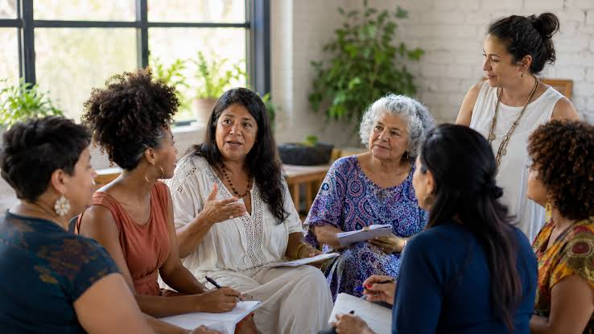
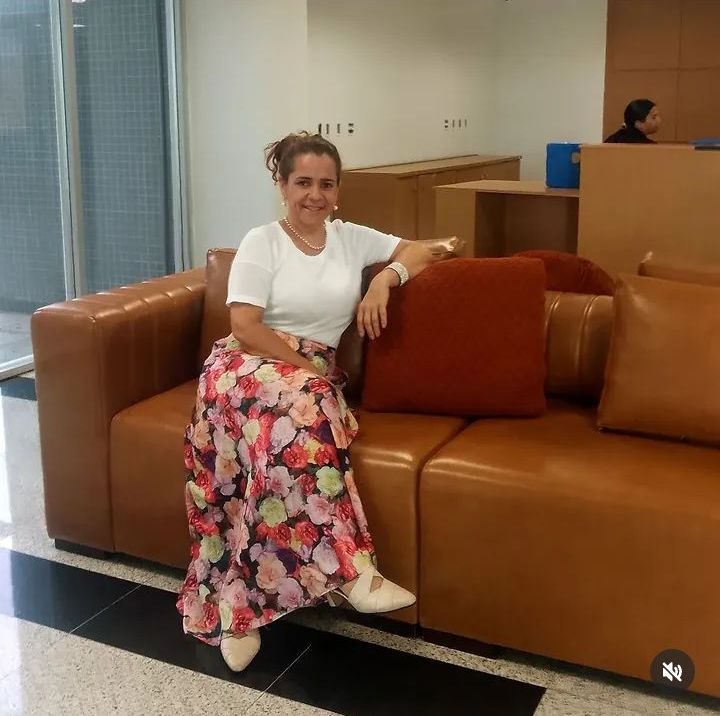

O Somos Mulheres em Movimento é mais que uma editora ou um grupo; é um ecossistema de cura e protagonismo feminino através da escrita.

O projeto nasceu sob o olhar da psicóloga Celiana Werneck, que percebeu que muitas dores femininas permaneciam estagnadas por falta de um canal de expressão seguro.
O que começou como um círculo de apoio, evoluiu para uma coletânea literária onde cada mulher tem a oportunidade de ressignificar sua jornada, tornando-se coautora da sua própria história.
Acreditamos que a coragem nasce quando abraçamos nossa verdade, sem máscaras.
Não competimos. Criamos pontes para que a subida de uma seja o impulso para a próxima.
Escrever é deixar um rastro de luz para as gerações que virão depois de nós.
Psicóloga e escritora. Foi a criadora do projeto, com intuito de ajudar mulheres a compartilharem suas histórias com o mundo.
"Quando uma mulher escreve, ela retoma o controle da narrativa da sua própria vida."
